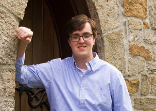
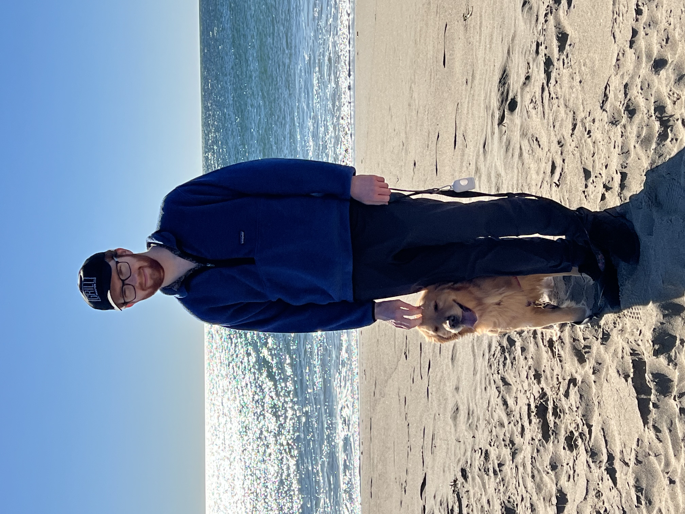
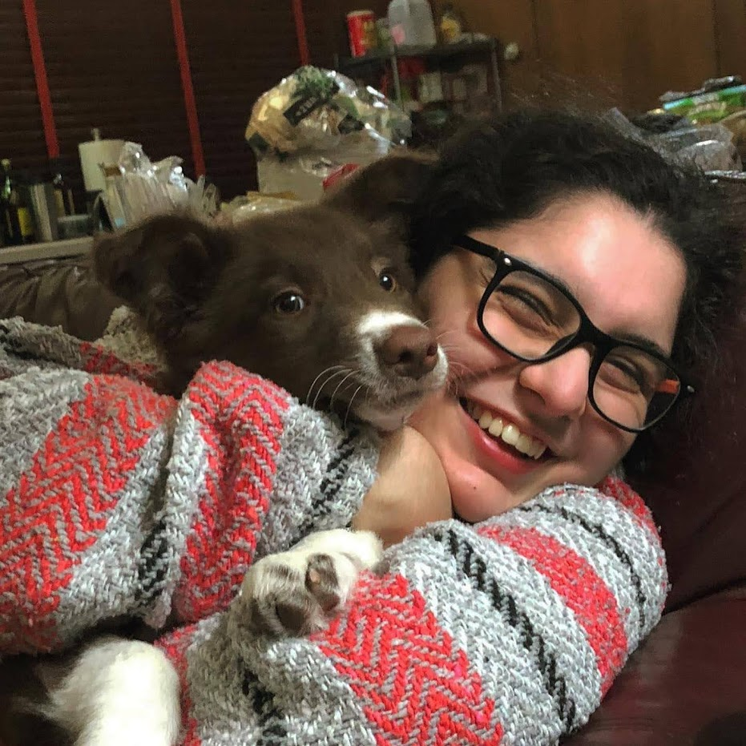
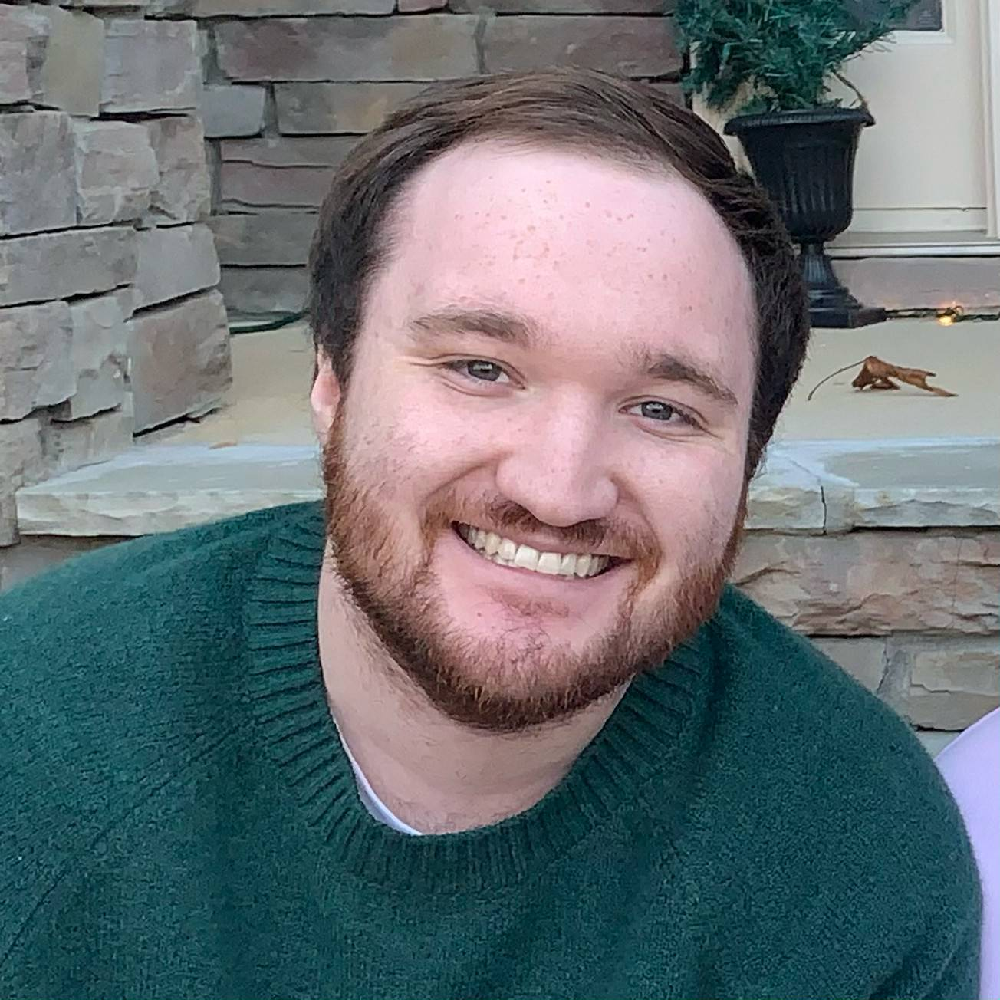

Jack Quinlan

My name is Jack Quinlan originally from Boston, Massachusetts.
I am a senior at George Washington University studying Computer Science and History.
During the project, I mainly focused on the backend infrastructure of BelayOn including the matching algorithm,
Firebase implementation, and real-time chat. One of my biggest interests in Computer Science is building apps that
I can use myself on a daily basis. Throughout my time working on this project, I have been inspired to give rock climbing a try!
I hope that BelayOn inspires more people just like me to make new friends and find new amazing climbing locations.
Collin Droof

My name is Collin Drooff, I am a graduating senior majoring in Computer Science at George Washington University.
In my free time I like to go rock climbing or try new coffee spots around the District of Columbia
Nicole Campagna

Hello hello! My name is Nicole Campagna, I'm from Venezuela and now I've spent around 7 years living in DC. I was in charge of most of the UI in the app,
along with app flow. Although it is a climbing app, personally I am a swimmer, though I have to admit that rock climbing is really fun. In my free time I like
to play games with my friends or alone, maybe my next venture will be a game, who knows? As for life after graduation I'm not sure yet, but I have
hope that it'll be something good!
Matt Chatelain

My name is Matt Chatelain, I'm a computer science major at George Washington University. With BelayOn,
I worked on the backend and the realtime chat. In my free time, I enjoy hanging out with friends and playing video games.
My biggest passion in programming is working with interactive media, video games especially; I love creating projects that people
can really enjoy and engage with!